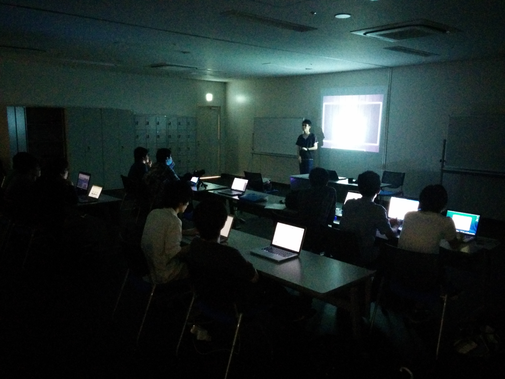

<div>
	<h2>プロジェクト開発入門- 仕様書 -　齋藤さん（院生）</h2>
	<div>
		内容：誰でも判る仕様書の設計<br />
		<br />
		数グループに別れ、クライアントからの要求を模した伝言からの仕様書設計を行いました。<br />
		「誰が見ても理解できる」という条件に対し、これで判るだろう！と思っていても、<br />
		出来上がったものを評価し直すとまだまだツメが甘い部分などが見つかり、指摘・改善しあい盛り上がりました。<br />
		<br clear="left"/>
		<br />
	</div>
</div>